Installing
§ 01Every build that passes its tests is published as a release on GitHub. Nothing has to be compiled.
- Open the Releases page and download
TwistedBreaks-macOS.zipfrom the newest release. - Unzip it. Copy
TwistedBreaks.componentto~/Library/Audio/Plug-Ins/Components/andTwistedBreaks.vst3to~/Library/Audio/Plug-Ins/VST3/(or the same folders under/Libraryfor all users). - Clear the download quarantine in Terminal, so macOS lets the plug-in load:
xattr -dr com.apple.quarantine ~/Library/Audio/Plug-Ins/Components/TwistedBreaks.componentxattr -dr com.apple.quarantine ~/Library/Audio/Plug-Ins/VST3/TwistedBreaks.vst3 - In Live: Settings → Plug-Ins, turn on Use Audio Units v2 and Use VST3 Plug-in System Folders, then Rescan.
- In the browser: Plug-Ins → Twisted Genetics → TwistedBreaks. It is an instrument; drop it on a MIDI track. Arm the track (or set Monitor to In) so your controller reaches it.
If the AU doesn't show up after installing a new version, run killall -9 AudioComponentRegistrar in Terminal and rescan. Use either the AU or the VST3 in a set, not both.
The plugin window can be resized from 75 % to 150 % by dragging its corner. Latency is zero: nothing needs compensating.
The panel
§ 02One console, nine areas. The left side is always the pads; the large screen on the right changes with the keys on the top rail.
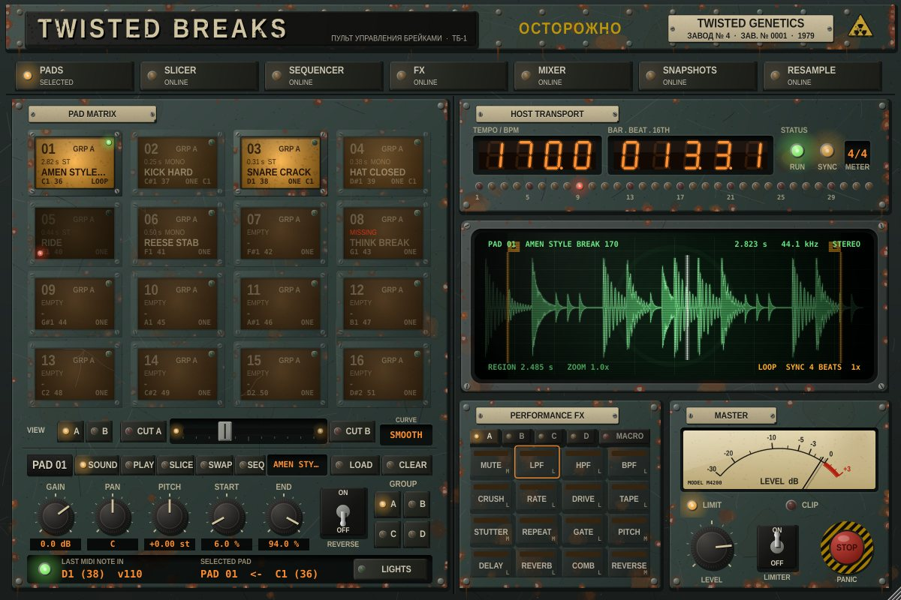
1 2 3 4 5 6 7 8 9- 1Top rail. Pads Slicer Sequencer FX Mixer Snapshots Resample choose what the screen (7) shows. Click a lit key again to go back to the waveform.
- 2Pad matrix. 16 pads of the scene on view. Click to play (higher on the pad = harder), drop a file to load it.
- 3Scene strip. A B view, Cut A, crossfader, Cut B, curve. See § 14.
- 4Pad editor. The selected pad's pages: Sound Play Slice Swap Seq, its name, Load and Clear.
- 5Status strip. The last MIDI note received, the selected pad and its note, and Lights for the iRig Pads.
- 6Host transport. Live's tempo, bar.beat.16th, run / sync lamps, meter and a 32-step playhead.
- 7Screen. The waveform and slice editor, or the view picked on the top rail.
- 8Performance FX. The 16 effect keys for group A, B, C or D, and the Macro tab.
- 9Master. Level, the zero-latency limiter, clip lamp, needle meter and the red Stop panic button.
Readouts and keys
Orange number windows (LEN, STEP, AMOUNT and the like) are readouts: drag up or down or use the scroll wheel to change them, click to step through a short list, double-click for the default. Keys with a lamp light when they're on. Almost everything is an automatable parameter in Live, so it can be MIDI-mapped and drawn into the arrangement.
Pads & samples
§ 03Loading
Drag a WAV, AIFF or FLAC onto a pad (or onto the screen for the selected pad), or press Load. Files decode in the background, so loading never interrupts playback. Clear empties the pad. A pad tile shows its length, mono / stereo, name, MIDI note and a footer tag such as LOOP C2 SW1 BK SP12 (mode, choke group, SWAP group, follows the bank, character).
The screen shows the selected pad's waveform. Drag the S and E markers to set the start and end, scroll or pinch to zoom, drag to move along, double-click to zoom out. Editing never changes the file.
Sound page
Gain Pan Pitch (±12 semitones) Start End knobs, the Reverse switch, and the Group keys A–D that send the pad to a group bus.
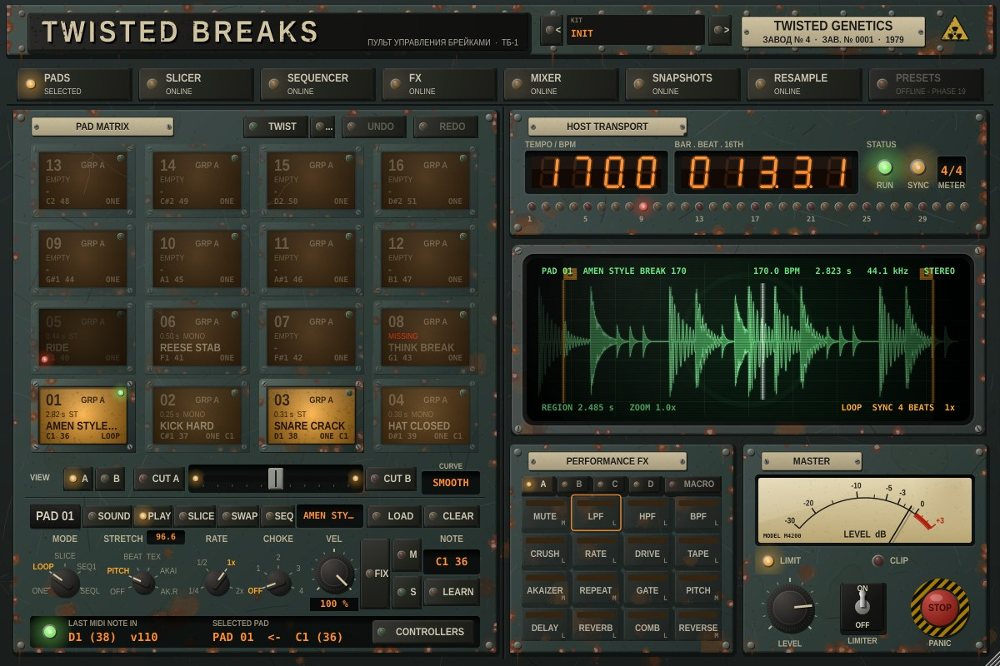
Play page
| Control | What it does |
|---|---|
| Mode | ONE plays the sample once. LOOP repeats while the pad or note is held, with a crossfaded loop point. SLICE plays one slice (§ 04). SEQ1 / SEQL make it a sequence pad (§ 09). |
| Sync | Loops lock to Live's tempo and bar grid. The length in beats is worked out from the audio, a pad hit mid-bar enters at the right point, and it re-locks after loop-brace jumps and tempo changes. |
| Rate | Loop speed: 1/4, 1/2, 1x or 2x. |
| Choke | Groups 1–4: a hit stops the other pads in the same choke group (3 ms fade). Open and closed hats, for example. |
| Vel | Velocity sensitivity, from 0 % (always full) to 100 %. |
| Fix | Fixed velocity: every hit at full level, whatever the sensitivity. |
| M S | Mute and solo (solo works across both scenes). |
| Note | The pad's MIDI note. Drag or scroll it, or press LEARN and play a note. |
Copy, paste, swap & undo
Right-click a pad for Copy, Paste, Paste special, Copy to, Swap with and Clear pad. A copy takes everything about the pad: the sample (shared, so nothing reloads), its slice markers, every setting on the SOUND / PLAY / SLICE / SWAP / SEQ pages, its sequencer lane and its slice sequence. It leaves the MIDI note, mute and solo where they are. Paste special pastes just the sound (sample, slices, settings), just the steps or just the settings.
- Alt-drag a pad onto another to copy it there; Shift-drag to swap them. Neither makes a sound.
- Cmd-C / Cmd-V copy the selected pad and paste onto it.
- Undo / Redo (top right of the pad matrix, or Cmd-Z / Cmd-Shift-Z) step back through the last 50 pad edits: pastes, swaps, clears, loading a sample, slice-marker edits and step edits from the mouse, Push, Mikro or live recording. Each burst of editing is one step. Knob moves are Live's own undo (Cmd-Z in Live's window).
- Opening a Live set starts a fresh history.
TWIST, layers & stretch
- Twist (above the pad matrix, or right-click a pad) shakes up the selected pad's sound around how you left it: pitch, start, pan, reverse, character, slice and gain. Press it again for another take on the same starting point; change something yourself and that becomes the new starting point. ... next to it sets the amount (10–100 %) and locks the settings you want left alone. Each TWIST is one undo step. It's also a parameter (
Twist) you can MIDI-map, and Events on the Mikro (Shift + Events: undo). - Layers (right-click a pad > Layers): up to 4 extra samples per pad. Round robin plays them in turn, Velocity picks by how hard you hit (soft = the pad's own sample, hardest = the last layer), Random picks one. They follow the pad's START / END, pitch, gain and pan; a SLICE pad, SLICE SEQ or a pad following the bank plays only its own sample. The tile shows
RR3,VL2and so on. Layers are copied, saved with the set and carried by presets. - Stretch (right-click a pad > Stretch): play a one-shot or SLICE break in time with Live without LOOP. It works for pad hits, sequencer steps, slice sequences and Mikro KEYBOARD slices.
- Repitch: speed follows Live's tempo and the pitch moves with it (0.21's FIT).
- Beats: each slice starts on its own spot on Live's grid at its own pitch, like Live's Beats warp. When Live is slower than the break, Fill the gaps chooses None (silence), Loop (the end of the slice repeats) or Back & forth. A pad without markers uses 16 equal slices.
- Texture: overlapping grains, smooth and pitch-true, for pads and atmospheres. Grain / cycle sets the grain size.
- Akai Classic and Akai Revised: the cyclic stretch of the S950 / S1000 samplers, the metallic sound of 90s jungle. Grain / cycle sets the cycle length (try 20–30 ms). Classic splices the cycles nearly hard; Revised joins them in phase, so it's cleaner.
Slicer
§ 04Cut a break at its hits, then play the slices from pads, chop between breaks, or rearrange them in the slice sequencer.
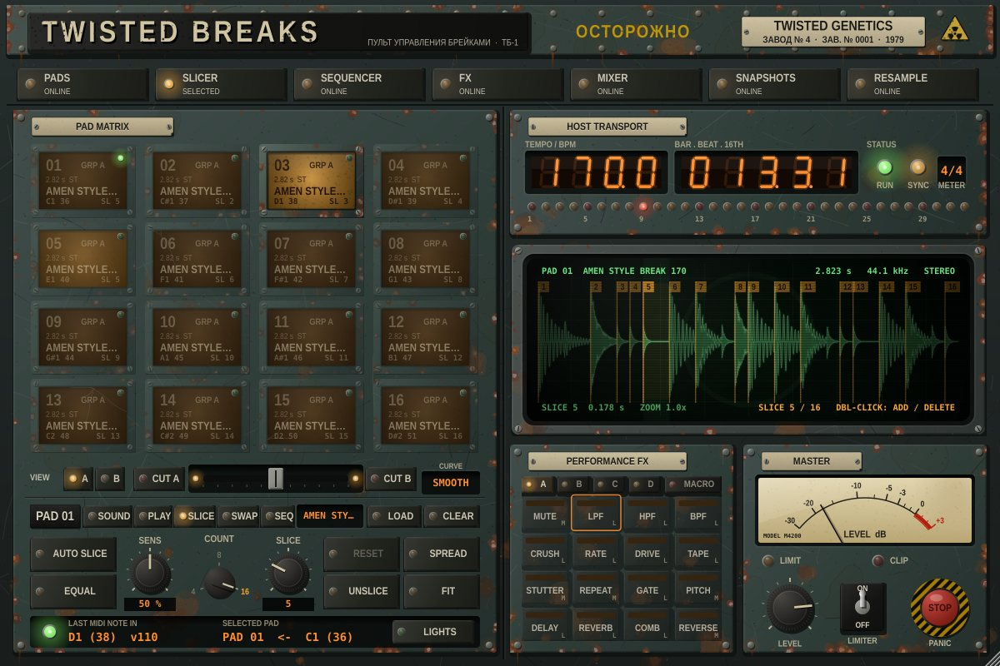
- Auto slice finds the kicks, snares and hats and puts a numbered marker just before each attack. Sens sets how quiet a hit it picks up; Count (4 / 8 / 16) keeps the strongest.
- Equal cuts COUNT equal slices instead (good for loops with soft attacks).
- On the screen: drag a marker to move it, double-click to add one, double-click a marker to delete it, click a slice to select it (and hear it in SLICE mode).
- Reset undoes your edits back to the last AUTO / EQUAL result, Unslice removes the markers, Fit zooms out.
- SLICE mode (PLAY page) plays the slice chosen by the Slice knob.
- Spread puts each slice on its own pad, from the selected pad onwards, in SLICE mode, sharing one copy of the audio. It stops at the end of the scene.
Classic workflow: drag the amen onto pad 01, Auto slice, Spread, and play it from the iRig.
SWAP groups
§ 05Chop and change between breaks on the slice points. The amen is playing; when it reaches the snare, hit pad 2 and the think break takes over from its own snare.
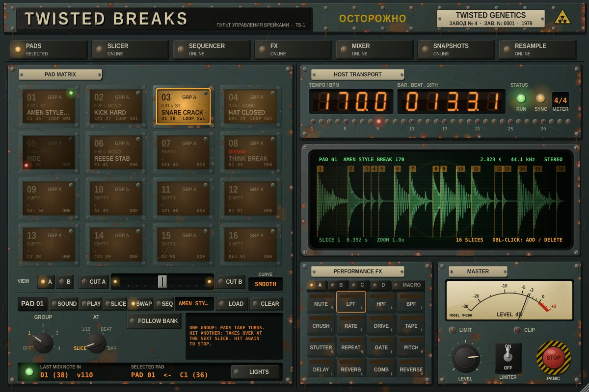
- Slice two or more breaks (§ 04) and put their pads in the same Swap group, 1–4, on the SWAP page.
- Hit one. It plays latched (letting go doesn't stop it).
- Hit another pad in the group. It flashes while it waits, then takes over at the playing break's next slice marker, carrying on from the same point in its own break and starting right on its own hit.
- Hit the playing pad again to stop it at its next point.
At picks when a hand-off lands: SLICE (the next marker), or the next 1/16, BEAT or BAR of Live's grid. Slice-sequenced pads and sequence pads (§ 09) hand off on their next step. Follow bank is explained in § 12; From step 1 makes an incoming sequence start from the top.
Groups & mixer
§ 06Every pad plays through one of four group buses, A–D, each with its own effects chain. Choose the group with the Group keys on the SOUND page.
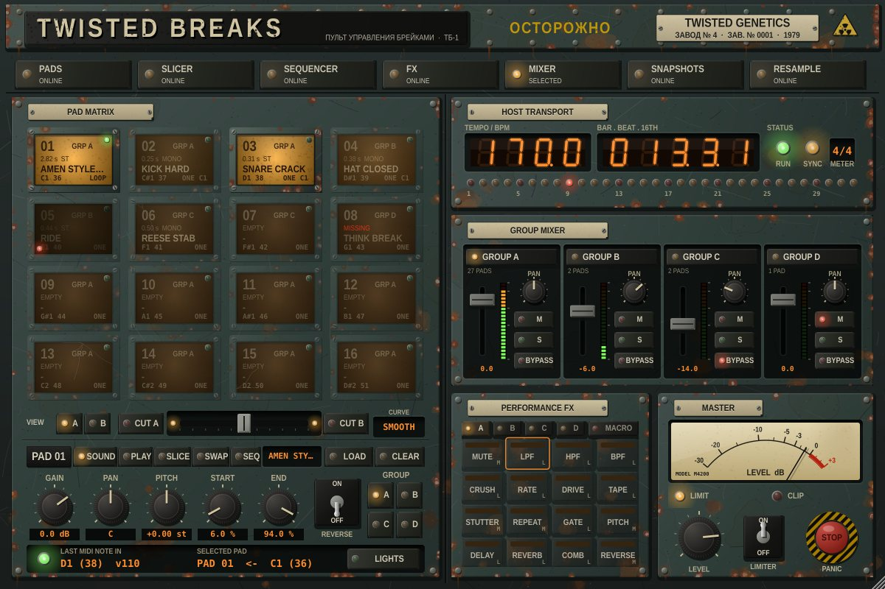
Mixer shows a strip per group: fader, LED meter, Pan, Mute, Solo and FX Bypass. Click a strip's name plate to send the selected pad to that group. Mutes glide over 20 ms, so they never click.
A useful layout: kicks and snares on A, breaks on B, bass and stabs on C, FX hits on D. Then a filter or stutter on B leaves the drums underneath untouched.
Performance FX
§ 07Sixteen effects per group, in this order in the chain. Pick the group with the A B C D tabs, then play the keys.
Each key is LOCKED (click on, click off) or MOMENTARY (on while held), shown as L or M in its corner. The lamp shows what the engine is doing; it flashes while an effect waits for its beat boundary. FX on the top rail opens the editor for the picked key: its settings, LOCKED / MOMENTARY and ALL OFF. Right-click a key to edit it without switching it.
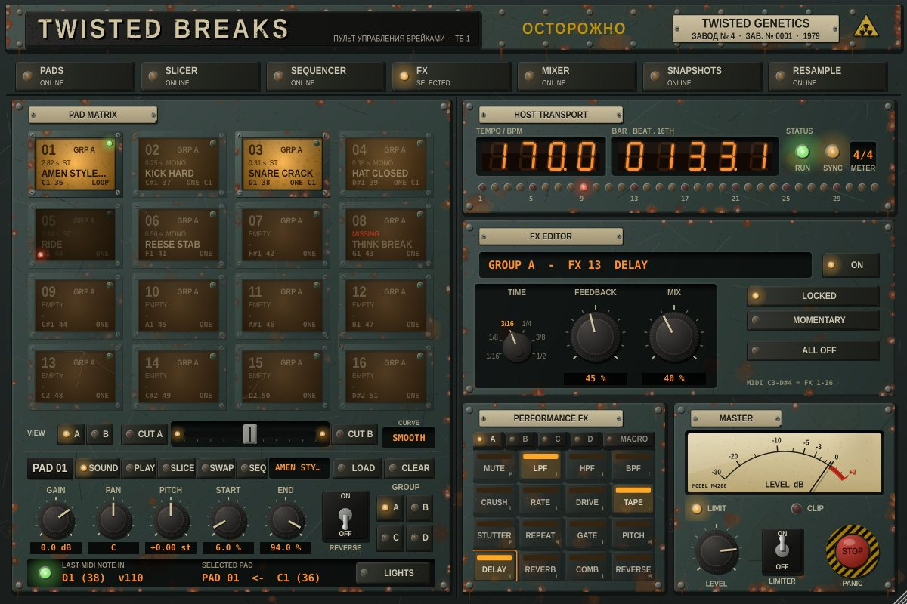
| Key | Effect | Settings | Note |
|---|---|---|---|
| Mute | Silences the group | — | C3 |
| LPF | Low-pass filter | Cutoff 20 Hz–20 kHz, resonance, drive | C#3 |
| HPF | High-pass filter | Cutoff, resonance, drive | D3 |
| BPF | Band-pass filter | Cutoff, resonance, drive | D#3 |
| Crush | Bit crush | Bits 1–16, mix | E3 |
| Rate | Sample-rate reduction | Rate 200 Hz–44.1 kHz, smooth / stepped, mix | F3 |
| Drive | Distortion | Soft / hard / saturate, 0–36 dB, mix | F#3 |
| Tape | Tape saturation | Saturation, tone | G3 |
| Akaizer | Akai S950 / S1000 cyclic pitch shift: the metallic 90s jungle sound (in STUTTER's place since 0.25) | Pitch ±24 st, cycle 5–150 ms, Classic / Revised | G#3 |
| Repeat | Beat repeat | Division 1/2–1/32 | A3 |
| Gate | Tempo-synced gate | 1/8, 1/16, 1/32, duty | A#3 |
| Pitch | Pitch drop (dive) | Time 1/16–1 bar | B3 |
| Delay | Tempo delay (a throw: the tail rings on) | 1/16–1/2 incl. 3/16 and 3/8, feedback, mix | C4 |
| Reverb | Reverb (a throw) | Size, damping, mix | C#4 |
| Comb | Comb resonator | Pitch ±24 st, feedback, damping | D4 |
| Reverse | Plays the last moment backwards | Size 1/8–1 bar | D#4 |
MUTE, AKAIZER, REPEAT, PITCH and REVERSE start as MOMENTARY, the rest as LOCKED. REPEAT and REVERSE always start on the next musical boundary. MIDI notes C3–D#4 play the effects of the group picked in the panel; a LOCKED note toggles, a MOMENTARY note holds. The red Stop button switches every effect off and cuts the tails.
AKAIZER
Akai's S-series samplers stretched and pitched breaks by cutting them into short cycles and replaying each one at the new pitch. The joins buzz at the cycle rate and the sound goes metallic and phasey: the stretched amens of 90s hardcore, jungle and speed garage. AKAIZER does that live on a group:
- Pitch: ±24 semitones, in quarter-tones. The tempo doesn't change.
- Cycle: 5–150 ms. Short cycles (8–15 ms) buzz and ring like a robot. 20–30 ms is the classic stretched-amen sound. Long cycles (60 ms and up) stutter and echo.
- Mode: Classic splices the cycles almost hard, like the samplers did. Revised crossfades them in phase: smoother, less buzz.
Try these: Classic, 20–30 ms, +3 to +7 st on a break for the 90s sound; Revised, 40 ms, −5 st for darker, smeared drums. AKAIZER runs about one cycle behind the beat (longer when pitched up), like any pitch shifter.
The same engine is a pad Stretch mode (Akai Classic / Revised, § 03), and right-click a pad > Render Akai… makes a new sample the way the Akaizer program does: time factor 25–2000 %, pitch ±36 st, cycle and mode, onto the next empty pad. Listening references are in the repo's docs/audio/akaizer/.
STUTTER's old settings stay in old Live sets but do nothing now. The JUNGLE ROLL macro rolls with REPEAT instead.
Macros
§ 08Eight one-key moves on the Macro tab of the PERFORMANCE FX panel. Each engages several effects at once with its own settings.
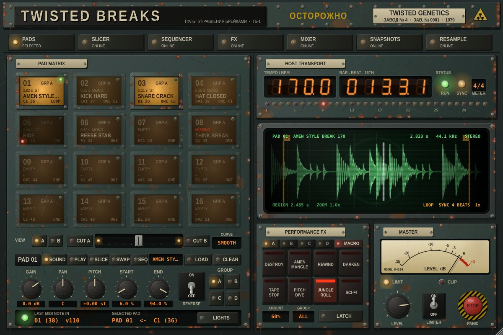
| Macro | What happens | Note |
|---|---|---|
| Destroy | Hard drive, crushed bits, stepped sample-rate grit | E4 |
| Amen mangle | Beat-repeat chops gated on the grid, a touch of crush | F4 |
| Rewind | The last beat backwards through tape, thinned out | F#4 |
| Darken | Low-pass, warm tape and a dark room | G4 |
| Tape stop | Slows to a halt over 1/2 bar (HARD: a whole bar) | G#4 |
| Pitch dive | A fast drop thrown into a 1/4 delay | A4 |
| Jungle roll | 1/16 stutter roll (HARD: 1/32), lifted with a high-pass and echo | A#4 |
| Sci-fi | Resonator, a 3/16 echo and a resonant band-pass | B4 |
- Hold a key to play a macro, or switch on Latch so a click (or note) toggles it.
- Amount goes from MILD (0 %) to HARD (100 %); ride it while a macro is held.
- Group picks A, B, C, D or ALL.
- Your own effects are never overwritten: if a macro borrows your LPF, it comes back exactly as it was when you let go.
- Snapshots keep AMOUNT, GROUP and LATCH but never switch a macro on.
Editing the macros
Press Edit on the MACRO tab, or right-click a macro key, to open the macro editor. Pick a macro with 1–8. The 16 effects are on the left: a lit one is in the macro. Click an effect to edit it, and double-click it (or use In this macro) to add it or take it out.
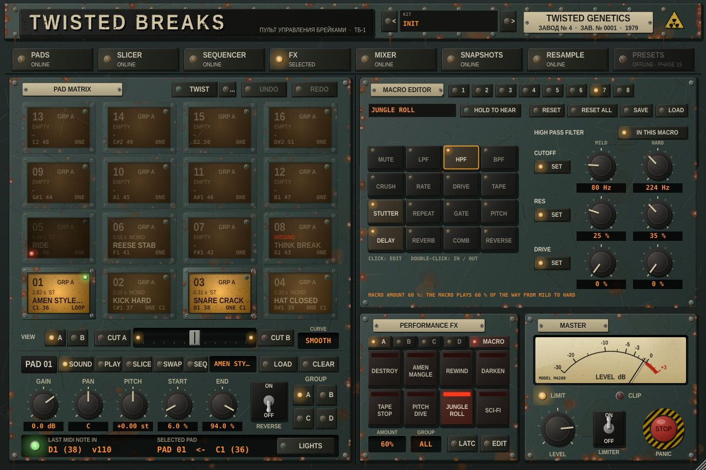
- Each of the effect's settings is either Set, with a MILD and a HARD value (MACRO AMOUNT plays the macro that far between them), or Leave, so it stays at your own setting.
- Type a new name for the macro's key. Hold to hear plays the macro while you hold it, so you can tune it as you listen.
- Reset puts one macro back to the factory recipe; Reset all puts all eight back. Save / Load trade a macro as a
.tbmacrofile. - Your recipes are saved with the Live set and in kit presets. Snapshots leave them alone.
Sequencer
§ 09A 32-step lane for every pad, locked to Live's transport. The view covers the transport box, so tempo and position move into its bottom row.
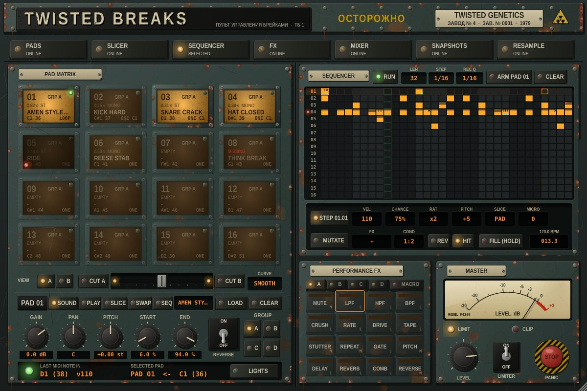
Programming
- Click a cell to place a step (and select it), drag up or down on a step for velocity, click a lit step to clear it. Right-click or shift-click selects a step without switching it off.
- Click a lane number to select that pad; Arm and Clear follow it.
- The pattern plays exactly while Live plays: Live's play starts it, Live's stop stops it (there's no separate run key since 0.17). Whole: the selected pad's steps always play the whole pad, never a slice. Len 1–32 steps (polymetric against Live's bar is fine); Step 1/8, 1/16 or 1/32.
- Live recording: Arm a pad, press play in Live and hit the pad (mouse or MIDI). Hits are quantised to Rec Q (1/4–1/32); anything finer than the step size is kept as micro-timing.
The STEP row
| Field | What it does |
|---|---|
| Vel | Velocity 1–127 |
| Chance | Probability the step plays, rolled each time round. A step's ratchets play all or nothing. |
| Rat | Ratchet: 1–4 hits spread across the step (rolls) |
| Pitch | ±24 semitones on top of the pad's own pitch, for this hit only |
| Slice | PAD (the pad's own sound) or slice 1–16 of its break |
| Micro | Nudge early or late, in 1/128 of a step |
| FX | An effect held on the pad's group for exactly this step. Back-to-back FX steps run without a gap. |
| Hit | Off = the step only throws its FX, so a break loop runs on underneath instead of restarting |
| Rev | Plays this hit backwards |
| Cond | When the step plays (below) |
Conditions
| Cond | Plays |
|---|---|
| ALWAYS | Every time |
| 1:2 … 4:4 | On pass A of every B (1:4 = first of four) |
| FILL | Only while FILL is held |
| !FILL | Only while FILL isn't held |
| FIRST | Only the first time round after pressing play |
| !FIRST | Every time except the first |
Passes are counted on Live's timeline, so with a 4-bar loop brace a 1:4 step plays in the same place every time.
Cell marks
- Fill height: velocity
- Black ticks along the top: ratchet
- Dot top-right: chance below 100 %
- Green corner: pitch, reverse or slice
- Red corner: an FX step
- Cyan underline: a condition
- Outline only: FX only (HIT off)
- Thin black line: micro-timing
Fill (hold) is the automatable Sequencer Fill parameter: MIDI-map it to a pad.
PITCH, REV and SLICE don't apply to pads in a SWAP group or with SLICE SEQ on (they run their own playback); they do on SEQ pads. A pitched step on a synced loop plays that hit at its own speed, off the grid.
Sequence pads
Set a pad's MODE (PLAY page) to SEQ1 or SEQL and its lane stops running by itself: hitting the pad plays it, once (SEQ ONE) or looped (SEQ LOOP). On a sliced break, the lane's SLICE, PITCH and REV steps make a whole chopped pattern you fire from one pad. How hard you hit scales the whole sequence.
- A sequence always plays in time with Live's playhead: it joins on the step under it, as if it had been running all along, so it sits on the bar and its lane playhead is on the same column as the sequencer's.
- Launch (in RATE's place): when it comes in: NOW or on the next 1/16, BEAT or BAR, exactly on that sample.
- Len (in SYNC's place): GLOBAL (the sequencer's LEN) or its own 1–32 steps, so a fill and a groove can live on different pads.
- Hit a SEQ LOOP pad again to stop it at the next LAUNCH boundary (it flashes while it waits; hit once more to cancel). SEQ ONE plays one full pass from its launch; hit it again for another pass from the next boundary.
- In a SWAP group, sequence pads cut each other like breaks do: on the next STEP (AT SLICE), 1/16, BEAT or BAR. The incoming sequence plays the step under the playhead, or starts from the top with From step 1 (SWAP page). Sequence and break pads can share a group.
- FIRST plays only on its first time round after the launch. Choke groups stop a sequence; stopping or starting Live ends it; at a loop brace wrap it follows the playhead round. With Live stopped, the first hit starts it from step 1.
Mutate
§ 10One press makes a variation of your patterns that keeps the groove. It's on the Mutate tab under STEP in the SEQUENCER view.
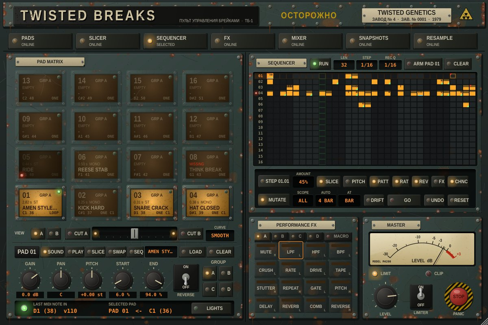
The rules it keeps
- Hits on the beat are never removed, moved, re-sliced, pitched or reversed.
- Nothing moves off the grid. New hits are only quiet ghosts beside existing ones.
- Rolls and FX throws mostly land in the last beat of the bar.
- On a SLICE SEQ pad, the beats keep their slices; off-beat steps trade slices and tied steps re-hit.
- An empty lane stays empty.
Controls
| Control | What it does |
|---|---|
| Amount | How much changes. 0 % gives back your pattern. |
| Slice Pitch Patt Rat Rev FX Chnc | What may change: slices, pitch, the pattern, ratchets, reverse, FX throws, chance |
| Scope | PAD = the selected pad (its lane and slice sequence), ALL = every pad of both scenes |
| Auto | Mutate by itself every 1, 2, 4 or 8 bars, on the bar line (also across loop-brace wraps) |
| At | When a GO lands: NOW, next BEAT or next BAR, on the exact sample |
| Drift | Off: every GO is a fresh variation of your pattern. On: each builds on the last. |
| Go | Mutate (also the MIDI-mappable Mutate parameter) |
| Undo Reset | UNDO flips between the last two versions; RESET brings back your pattern exactly |
Editing a pattern by hand, recording into it or recalling a snapshot makes that the new original.
Slice sequencer
§ 11Rearrange a sliced break, pad by pad. Open the pad editor's Seq tab and switch Slice seq on: the pad now plays its own pattern of slices when hit, and a second hit stops it.
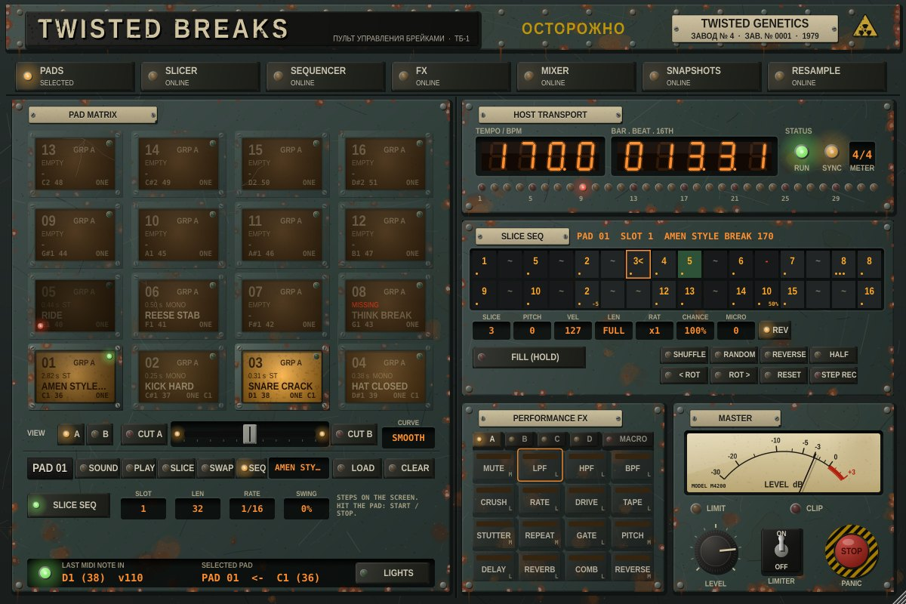
- Untouched, the pattern replays the break exactly as recorded, at any tempo (it is re-sequenced, not stretched).
- Drag a step up or down to pick its slice (below 1: REST, then TIE, which lets the slice ring on). Double-click for TIE.
- The selected step has Slice Pitch Vel Len (gate) Rat Chance Micro Rev.
- One-press edits: Shuffle (the beats stay put) Random Reverse Half < Rot Rot > Reset. Hold Fill for rolls.
- Step rec: tap the pads of a SPREAD break to write their slices into the steps in turn.
- 8 Slots per pad (automatable; a change lands at the pattern start), plus Len, Rate (1/8, 1/16, 1/32, 1/16T) and Swing.
- A main-sequencer step on the pad starts its slice sequence; with Live stopped it runs from its own clock.
Snapshots & break bank
§ 12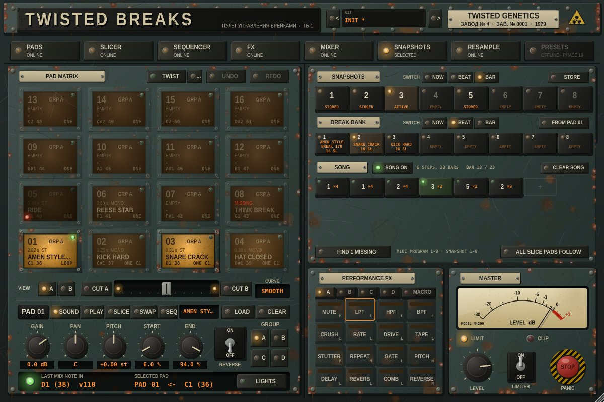
Snapshots
- Store, then click a slot: it captures every pad of both scenes (sample, slices, all settings), the routing, the mixer, every effect and both sequencers.
- Click a slot to recall it Now, on the next Beat or next Bar. The change lands on the exact sample of that boundary.
- Also MIDI Program Change 1–8, and the automatable
Snapshotparameter for writing changes into the arrangement. - The master section, crossfader and scene view are never changed by a snapshot.
Break bank
- Drop up to 8 breaks onto the bank slots (they're sliced automatically), or From pad copies the selected pad's break with its markers.
- Pads with Follow bank (SWAP page), or every slice pad at once with All slice pads follow, play the active break.
- Switch break by clicking a slot or automating
Break Bank: every following pad and slice sequence changes on the next beat or bar and carries on with the same playing.
Song
A chain of snapshots, each for a number of bars, played from Live's bar 1 while Song on is lit (or the Song parameter is on). Click + to add the active snapshot for 4 bars; click a step to pick its snapshot (1–8) and length (1–16 bars), move, duplicate or remove it. Each step switches exactly on its bar line (the next one is loaded during the bar before), and the chain goes round again at the end. Start Live in the middle of the song, or jump around, and the step for that bar comes in at once. The playing step is lit green, with the bar in the song next to SONG ON. The song is saved with the set and with kit presets.
Find missing
If a set opens with samples marked MISSING, press Find missing and pick a folder. Every missing file is found by name (sub-folders included) and reloaded with its slices.
Resample & character
§ 13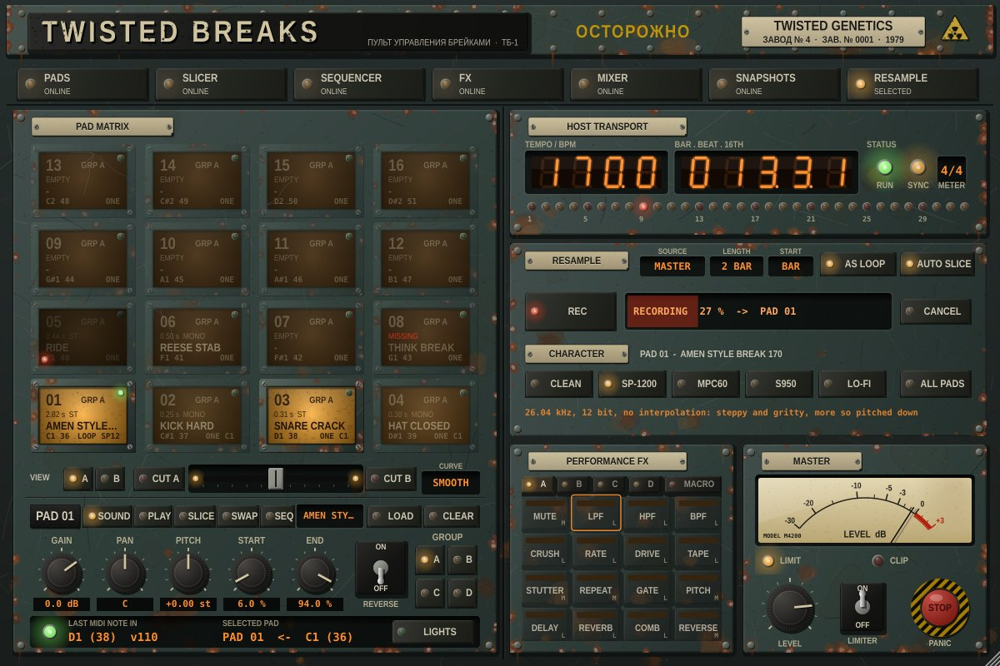
Resample
- Select the pad that should receive the recording (an empty one is best).
- Choose Source (MASTER = what you hear, or one group), Length (1, 2, 4 or 8 bars) and Start (BAR = the next bar line, NOW = straight away, also with Live stopped).
- Press Rec. It waits for the bar line, records, then saves a 24-bit WAV in
Music / Twisted Breaks / Resamplesand puts it on the pad. - With As loop on, the pad is set up as a tempo-synced loop; with Auto slice, it's sliced at its hits. Mangle a break, resample it, chop it again.
Cancel drops a take that's waiting or recording. REC is also the MIDI-mappable Resample parameter. The set refers to the WAV like any other sample, so keep that folder.
AS LOOP reads a loop's tempo as being between 90 and 180 BPM. A resample made below 90 BPM may play back at half speed: switch SYNC off for that pad, or resample at jungle tempo.
Character
A vintage sampler mode per pad. The sample is read as if the machine had stored it at its own rate and bit depth, so pitching a pad down gets grittier, as on the hardware. All pads copies the selected pad's character to the whole kit.
| Mode | Rate | Bits | Interpolation | Output filter | Sound |
|---|---|---|---|---|---|
| Clean | file | float | 4-point Hermite | — | Exactly as recorded |
| SP-1200 | 26.04 kHz | 12 | none | — | Steppy and gritty |
| MPC60 | 40 kHz | 12 | linear | ~15 kHz | Punchy and warm |
| S950 | 31.25 kHz | 12 | linear | ~9 kHz | Dark and thick |
| Lo-fi | 11.025 kHz | 8 | none | — | Crunchy and aliased |
Scenes A / B
§ 14Two decks of 16 pads, A and B, both playing all the time. Each has its own samples, pad settings, sequencer lanes and slice sequences.
- A B (VIEW) picks which 16 pads the matrix, pad editor, sequencer and your controller show. Switching keeps the same pad position selected and never stops anything. Scene B's pads are labelled B01–B16.
- The crossfader blends the two: drag it, double-click to centre it, or map the
Crossfaderparameter to a fader. - Cut A and Cut B go fully to one side while held.
- Curve: SMOOTH (both full in the middle, each fading over its far half) or SHARP (cuts only in the last 5 %, scratch style).
- The crossfader sits before the effects, so FX and macros on a group carry on smoothly through a fade.
- Shared by both scenes: groups, FX, macros, the break bank, snapshots and RESAMPLE.
Sets made before 0.13 open exactly as they were: scene A, the crossfader in the middle (both scenes at full level) and scene B empty.
Controller, MIDI, Push & Mikro
§ 15Stop means stop (0.22.1): when Live stops, every break stops with a 5 ms fade, whatever it is (loops, SWAP pads, slice sequences, sequence pads, note repeat); FX tails ring on. While Live is stopped, pads still sound so you can try them, but only while held: nothing latches or keeps running.
Recording your playing in Live
Everything you play on the pads (mouse, Push, the Mikro, note repeat, Mikro KEYBOARD slices) goes out as MIDI, so a MIDI track in Live can record your jamming into a clip:
- VST3: on a new MIDI track set MIDI From to the Twisted Breaks track and Twisted Breaks below it, arm it and record. Set its MIDI To to the Twisted Breaks track to play the clip back.
- AU (or either): turn on Lights > "Twisted Breaks Notes" port, then in Live's Settings > Link, Tempo & MIDI switch Track on for the Twisted Breaks Notes input. Any MIDI track with that input records it (Live timestamps it as it arrives, a few ms after the plugin's own MIDI out).
- Pads go out on channel 1 as their MIDI notes, with velocity and note-off. Slices from the Mikro's KEYBOARD go out on channel 2, notes 36–51 (slices 1–16); coming back in, channel 2 notes 36–51 play those slices on the selected pad, so a recorded clip plays back the same.
- MIDI you send in isn't sent back out (no loops). Sequencer steps stay inside the plugin unless you switch on Include sequencer steps.
MIDI map
| Input | Range | Does |
|---|---|---|
| Notes | 36–51 · C1–D#2 | The 16 pads of the scene on view (a Drum Rack layout). A note learned for one pad plays it in either view. |
| Notes | 60–75 · C3–D#4 | Performance FX 1–16 of the group picked in the panel |
| Notes | 76–83 · E4–B4 | Macros 1–8 (held, or toggled with LATCH) |
| Program Change | 1–8 | Recall snapshot 1–8 |
| CC 120 | All Sound Off | Panic |
iRig Pads lights
Press Lights in the status strip and pick your iRig Pads as the output. Its pads then show the scene on view: green while a pad plays (brightness follows the sound), dim green for loaded pads, flashing red while a SWAP hand-off is waiting. It works on the iRig's default scene; for any other layout choose Learn pad layout and hit each pad as it lights red. Test lights and Swap red / green are in the same menu. The layout is saved with the set.
Push 3 mode
With Push 3 plugged into the Mac, Twisted Breaks can take Push over completely. Press Push's USER key and the grid, encoders, touch strip and keys play and edit the plugin; press USER again and Push controls Live as normal. Play and Record drive Live's transport through the Twisted Breaks Remote port (map them once, as for the Mikro, below).
- In Live's Settings › Link, Tempo & MIDI, turn Track off for the input Ableton Push 3 (User Port), so Push's User mode notes don't also reach the track and play pads twice.
- In the plugin, Lights › Push 3 mode. The menu shows whether Push was found.
- On Push, set Setup › Pads › Expression to Poly Aftertouch for per-pad pressure.
- Press USER. With several Twisted Breaks in a set, the one whose window you last clicked gets Push.
| Scene A | Scene B | ||||||
|---|---|---|---|---|---|---|---|
| 13 | 14 | 15 | 16 | B13 | B14 | B15 | B16 |
| 09 | 10 | 11 | 12 | B09 | B10 | B11 | B12 |
| 05 | 06 | 07 | 08 | B05 | B06 | B07 | B08 |
| 01 | 02 | 03 | 04 | B01 | B02 | B03 | B04 |
| 1 | 2 | 3 | 4 | 5 | 6 | 7 | 8 |
| 9 | 10 | 11 | 12 | 13 | 14 | 15 | 16 |
| 17 | 18 | 19 | 20 | 21 | 22 | 23 | 24 |
| 25 | 26 | 27 | 28 | 29 | 30 | 31 | 32 |
The top four rows are all 32 pads, laid out like the matrix (01 bottom left): hit one to play it (with velocity and pressure) and select it. The bottom four rows are the selected pad's 32 steps, eight to a row. Tap a step to switch it on or off. Hold a step and turn the encoders to set its VEL, CHANCE, RATCHET, PITCH, SLICE, MICRO, REV and COND. Hold one step and tap another to copy it across the range. Layout swaps the bottom half for big pads of the scene on view.
Lights. Dim amber: loaded. Amber: selected. White: playing. Green: its sequence is running. Flashing: a launch, stop or SWAP is waiting. Red: muted. On the steps: amber is on (dim if soft), white is the playhead, and nothing is lit past LEN.
| Push | Does |
|---|---|
| Keys over the display 1–4 | Encoder page: PAD (gain, pan, pitch, start, end, slice, character, pressure) · FX (LPF, HPF, crush, drive, tape, stutter, delay, reverb of the pad's group) · SEQ (step, LEN, pad LEN, launch, mutate amount / auto / at, quantise) · MIX (groups A–D, crossfader, curve, macro amount, master) |
| Keys under the display | FX page: switch those eight effects (momentary ones while held) |
| Encoders 1–8 | The page's settings; SHIFT for fine moves. Each move is one undo step in Live. |
| Master encoder | Master level |
| Touch strip | The A / B crossfader, while you touch it |
| Column right of the pads, from the top | MUTATE · FILL (hold) · RESAMPLE (again to cancel) · VIEW A / B · LAYOUT |
| Mute / Solo + pad | Mute / solo that pad |
| Duplicate + pad, pad | Hold Duplicate, hit the pad to copy, then the pad to copy it onto (everything: sample, slices, settings, steps). Shift + Duplicate swaps the two. Shift + Delete + pad clears the pad. |
| Delete + pad / step | Clear that lane / step |
| Shift or Select + pad | Select it without playing |
| ‹ › and the jog wheel | Previous / next pad |
| Up / Down (and Octave) | Scene A / B |
| Fixed Length | LEN 8 / 16 / 32 (SHIFT: the pad's own LEN) |
| Accent / Repeat / Undo | MUTATE / FILL / undo the last pad edit (Shift + Undo: redo). Undo MUTATE from the plugin's MUTATE view. |
| Browse / Select | Browse: PRESETS in the plugin window; encoder 1 moves, Select loads, Shift + Select listens (§ 16) |
| Play / Record | Live's play and record, via Twisted Breaks Remote (lit green while Live plays, red while it records) |
Pressure (each pad's Pressure setting, on the PAD page or Lights › Pad … pressure): FILTER closes a low-pass, DRIVE saturates, STUTTER repeats a 1/16 from where you pressed (1/32 and 1/64 harder), PITCH bends down up to an octave, OFF does nothing. A synced loop you stutter or bend snaps back to the bar when you let go.
Push's screen stays Live's: the plugin can't draw on it. While Push is in User mode, the plugin's status strip shows the page, the selected pad and the knob you're touching, plus the last message from Push, which is handy if a key does nothing on your unit.
Maschine Mikro MK3 mode
Twisted Breaks talks to the Mikro MK3 directly over USB and owns its pads, lights, touch strip and screen. NI's Maschine app takes the Mikro over when it opens, so close it first.
- Plug the Mikro in with a data USB cable (some USB-C cables only charge), straight into the Mac.
- Lights › Mikro MK3 mode. The pads light and the screen shows the mode and the selected pad. With several Twisted Breaks in a set, the one whose window you last clicked gets the Mikro.
| Mikro | Does |
|---|---|
| Pad Mode | The 16 pads of the scene on view, laid out like the matrix: Mikro pad 1 (bottom left) is 01, pad 16 (top right) is 16. Velocity and pressure; lit like the tiles (dim: loaded, bright: selected, white: playing, green: sequence running, red: muted, flashing: waiting). |
| Group | Scene A / B |
| Step | The selected pad's steps 1–16, numbered like the pads: step 1 bottom left, step 16 top right, so the playhead runs along the bottom row and up (‹ › for 17–32). Tap: on / off. Hold a step and turn the encoder; push the encoder for the next field (SLICE, VEL, CHANCE, RATCHET, PITCH, MICRO, REV, COND). Hold one and tap another to copy it across. Erase + step clears it. |
| Keyboard | The selected pad's 16 slices, one per pad (slice 1 on pad 1, bottom left), each in its own colour. Hitting one plays it and makes it the chosen slice (screen: S07). Shift + Keyboard clears it. |
| Perform | The 16 performance FX of the selected pad's group; the encoder edits the last one you hit |
| Scene | Pads 1–8 recall snapshots 1–8 (Shift + pad stores) |
| Plug-In / Swing / Volume | Encoder page: PAD (gain, pan, pitch, start, end, slice, character, pressure …) · SEQ (step, LEN, launch, mutate …) · MIX (groups, crossfader, curve, macro, master). Turn: value. Push, or Shift + turn: next setting. The screen shows name and value. |
| Touch strip | Crossfader (Shift: macro amount) |
| Note Repeat (hold) | Held pads roll in time on Live's grid; Shift + Note Repeat: 1/8, 1/16, 1/32 |
| Mute / Solo / Erase / Select + pad | Mute, solo, clear its lane (Shift + Erase: clear the whole pad), select without playing |
| Duplicate + pad, pad | Hold Duplicate, hit the pad to copy, then the pad to copy it onto. Shift + Duplicate swaps them. |
| Shift + pad 1 / 2 / 11 / 12 | Undo / Redo / Copy the selected pad / Paste onto the selected pad (as printed under Maschine's pads). Not in SCENE or PERFORM. |
| Fixed Vel | Every hit at full velocity |
| Variation / Tap / Sampling | MUTATE (Shift: undo) / FILL while held / RESAMPLE |
| Events | TWIST the selected pad (Shift + Events: undo) |
| Browse | The preset browser on the screen: pads 1–4 = kits / pads / sequences / favourites, encoder = move, push = load, Shift + push = listen (§ 16) |
| Play / Stop / Rec | Live's transport, through the Twisted Breaks Remote port (map it once, below). Play lights while Live plays, Rec while it records. |
Whole-pad steps and slice steps
A step plays either the whole pad (looped or one-shot, until its choke group or the next hit cuts it, as the plugin's sequencer always has) or one slice of it. On the Mikro, what you picked last decides: a pad in Pad Mode means whole-pad steps (screen: WHOLE), a slice on Keyboard means slice steps (S07). Selecting another pad always starts on WHOLE. In Step, hold Pad Mode to pick the pad you're sequencing (it plays) and come straight back to its lane. Whole-pad steps light orange, slice steps in their slice's colour.
A pad with no slice markers shows NO SLICES on Keyboard. To make a pad's steps always whole, switch on Whole for its lane in the SEQUENCER view (the Pad … Whole Steps parameter): its steps then play the whole pad whatever they say.
Building a break slice by slice
- Load a break on a pad, slice it (§ 04) and select it.
- Keyboard: hit a slice. It plays and becomes the chosen slice.
- Step: tap steps. An empty step gets the chosen slice; a step with another slice (or a whole-pad step) takes this one; the same again switches it off. Steps light in their slice's colour, so you can see the break you're building.
- Pick the next slice and place it, and so on. Quicker: in Step, hold Keyboard, hit a slice, let go, and you're back on the steps.
Hold a step and the encoder edits its SLICE first (push for VEL, CHANCE …). With the pad's lane armed (§ 09) and Live playing, slices you finger-drum on Keyboard are recorded into the lane with their slice numbers. Slices on steps don't apply to SWAP or SLICE SEQ pads; the screen says so.
Live's transport from the Mikro and Push
A plugin can't press Live's buttons, so Twisted Breaks makes a MIDI port, Twisted Breaks Remote, for Live to listen to. Once, with Mikro or Push 3 mode on:
- Live › Settings › Link, Tempo & MIDI: for the input Twisted Breaks Remote, turn Remote on.
- Press ⌘M (MIDI Map mode), click Live's Play button, press Play on the Mikro; the same for Stop and Record (Arrangement or Session record, as you like). ⌘M again.
Push 3's Play and Record (in User mode) send the same notes, so one mapping serves both. (The notes: Play 94, Stop 93, Record 95 on channel 16.)
Unplug it and plug it back in at any time: it reconnects within a couple of seconds, and anything held (rolls, FILL, effects) lets go when the cable comes out. Mikro MK3 test in the same menu shows exactly what the Mikro sends, if something misbehaves.
Worth mapping in Live
Press ⌘M in Live, click the control in the plugin's device view (or its parameter in the automation chooser), then move the controller.
| Parameter | To |
|---|---|
Crossfader | A fader or knob |
Scene View | A button: flip the controller between scene A and B |
Sequencer Fill | A pad, held for fills |
Mutate | A pad: one press, one variation |
Resample | A pad: start a recording |
Macro Amount | A knob, ridden while a macro is held |
Snapshot, Break Bank | Arrangement automation for song sections |
Panic | An emergency button |
Presets, saving & troubleshooting
§ 16Presets
The Presets view (last key on the top row, or click the kit name in the header) saves and loads three kinds of preset. Every preset carries its own samples, so it opens on any Mac with nothing missing.
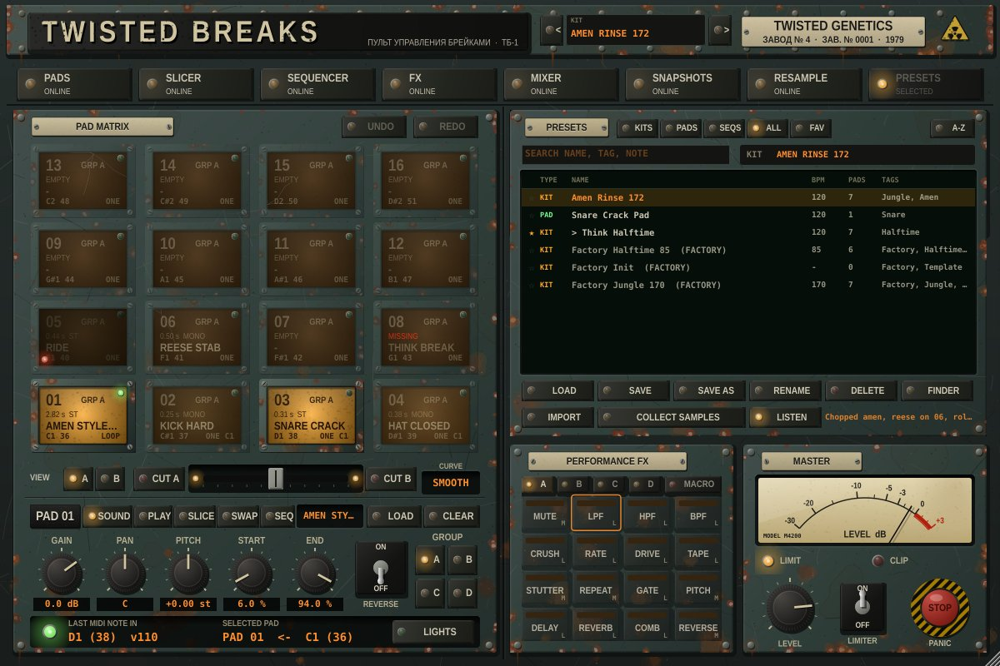
| Type | What it holds |
|---|---|
| Kit (.tbkit) | Everything: every pad's sample, slices and settings, both sequencers, the snapshots, the break bank, FX and mixer, the master. Not the MIDI note map or controller settings. While Live plays, a kit loads on the next bar; the old sounds keep playing until the new ones are ready. |
| Pad (.tbpad) | One pad: its sample, slices, settings and steps (what Copy takes). Loads onto the selected pad, or right-click > Load onto. |
| Sequence (.tbseq) | The patterns only: both sequencers and the sequencer settings (LEN, STEP, Rec Q, each pad's own length, WHOLE, slot). |
- Find: Kits Pads Seqs All Fav, the search box (name, tags and note), and A-Z / New sorting. Click the star on a row to make it a favourite.
- Listen and load: click a row to hear its first sound (Listen on), double-click or Load to load it, or use the arrow keys, Space and Return. ‹ › next to the kit name step through your kits.
- Save: Save writes over the current kit; Save as asks what to save (the kit, the selected pad or the sequences), a name, tags and a note. Rename, Delete (to the Trash), Finder, Import, or drop a preset file on the view.
- Loading a kit, pad or sequence is one undo step (UNDO puts the pads back).
- Where: your presets are in
~/Music/Twisted Breaks/Presets. Three factory kits (made from sounds the plugin synthesises, so nothing third-party) appear the first time you open the view. The samples inside presets are unpacked once into~/Music/Twisted Breaks/Library/Audio. - Collect samples copies every sample the set uses into that Library and points the pads, bank and snapshots at the copies, so the set no longer depends on files scattered around your drive.
- Mikro: Browse opens the browser on the Mikro's screen. Pads 1–4 pick kits / pads / sequences / favourites, the encoder walks the list, pushing it loads (pad presets onto the selected pad), and Shift + push plays it. Browse again to leave.
- Push 3: Browse shows PRESETS in the plugin window. Encoder 1 walks the list, Select loads, Shift + Select plays it.
- Export renders WAV at Live's tempo, starting from bar 1, for 1–16 bars: the selected pad on its own, or the whole kit (FX and mixer included). It renders in the background from a copy of the plugin, so Live keeps playing. Or it writes a MIDI clip of the sequencer: every pad, or the selected pad's lane, on the pads' MIDI notes with velocity, micro-timing and ratchets (pads in SEQ1 / SEQL mode are left out of "every pad", since you launch those by hand). Then drag Drag WAV / Drag MIDI onto a Live track. Exports also go to
~/Music/Twisted Breaks/Exports. - Audio is stored as 24-bit FLAC at its own sample rate, each sound once however many pads use it. A preset made by a newer version, or a damaged file, is refused with a message and nothing changes. A sound missing from a preset loads as MISSING with its name.
What the Live set keeps
All 1347 parameters, the kit name, the song, sample paths, slice markers (and their RESET point), the MIDI note map, both sequencers, snapshots, the break bank, the iRig light layout, Push 3 mode and Mikro MK3 mode. Changes made in the plugin window are reported to Live, so saving, duplicating the track and undo all pick them up. Samples are referenced, not copied: keep them where they are, use Collect samples (above) or Live's Collect All and Save, or save a kit preset, which carries its samples.
| If… | Then |
|---|---|
| The plugin doesn't appear in Live | Clear the quarantine (§ 01), rescan; for the AU, killall -9 AudioComponentRegistrar first. |
| Pads say MISSING | Find missing in the SNAPSHOTS view, pick the folder the samples are in. |
| Nothing plays from the controller | Arm the MIDI track or set Monitor to In; check the pad's note on the PLAY page; check which scene is on view. |
| Scene B is silent | Check the crossfader isn't fully on A and that no CUT key is held. |
| A synced loop plays at half or double speed | Its tempo reads outside 90–180 BPM. Trim START / END to whole bars, or switch SYNC off for it. |
| Sound keeps ringing | The red Stop button (or CC 120) stops every voice and tail and switches the effects off. |
| Push pads play twice in User mode | Turn Track off for Push's User Port in Live's MIDI settings (§ 15). |
| Push stays dark after USER | Lights › Push 3 mode must be on, and that plugin window was the last one clicked. |
| The sequencer doesn't move | It follows Live's transport only: press play in Live (or PLAY on the Mikro / Push, once mapped, § 15). |
Quick reference
§ 17Load a break
Drag the file onto a pad, or Load.
Chop it
Slicer → Auto slice → Spread.
Loop it in time
PLAY page: MODE LOOP, Sync on.
Switch breaks on the snare
Same Swap group, AT SLICE, hit the other pad.
Program a beat
Sequencer, click cells, press play in Live.
Fire a chopped pattern
MODE SEQL, program its lane, hit the pad.
Roll the hats
Select the step, Rat x3 or x4.
Vary it
STEP row → Mutate tab → Go.
Rearrange the break
Pad editor Seq, Slice seq on, drag steps.
Throw an effect
Hold a key in PERFORMANCE FX, or a Macro.
Change section
Snapshots: STORE, then recall on the next bar.
Bounce it down
Resample → Rec onto an empty pad.
Mix in a second deck
B, load it, ride the crossfader.